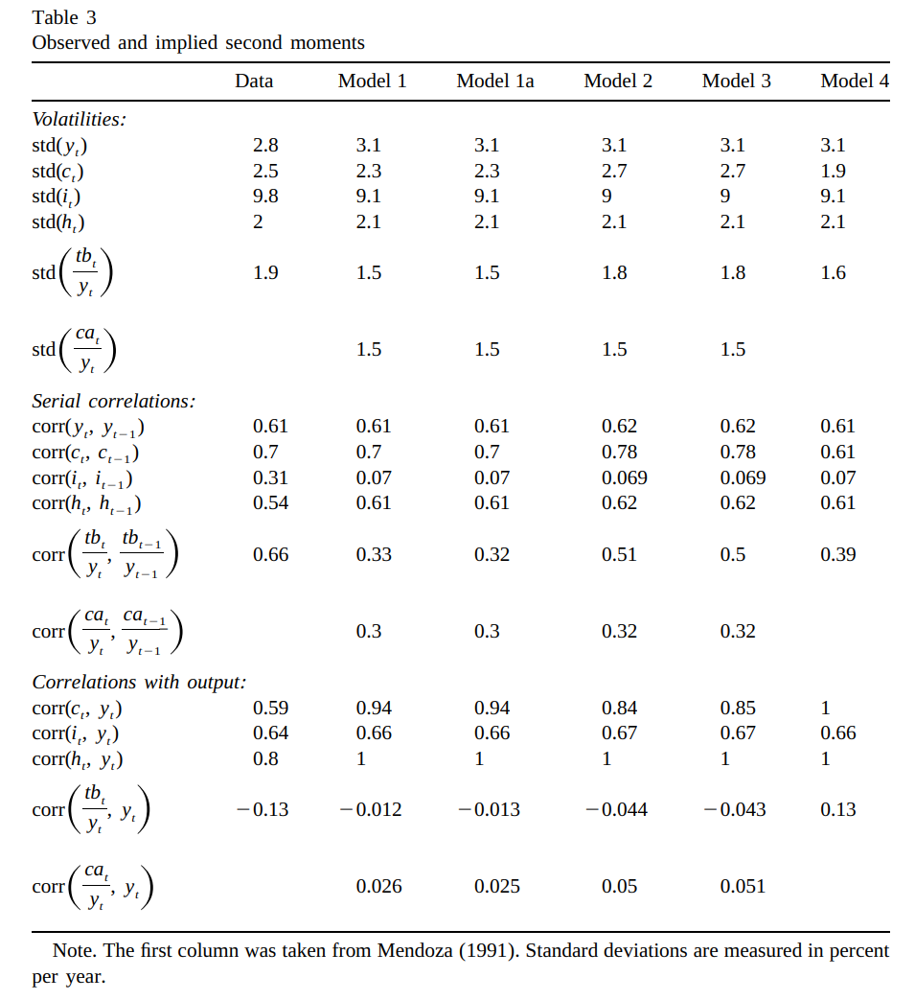

Small Open Economy Extension (IRBC)
Macro II - Fluctuations - ENSAE, 2023-2024
Introduction and Basic Facts
Why a small open economy?
What are the classical reasons to open economy to trade
- trade integration
- taste for variety
- comparative advantage
- financial integration
- smooth shock / insurance
From RBC to IRBC
After the success of RBC models to match business cycles it didn’t take long before the same methodology was applied to International Business Cycles
. . .
Seminal Paper:
- International Real Business Cycles, Backus, Kehoe, Kydland (1992) (freshwater economists)
Very successful methodology:
- facts at odd with theoretical predictions have been called “puzzles”
IRBC Facts
From Kehoe,Kydland (1995)
IRBC Facts

Stylized Facts
Domestically:
- output more variable than consumption
- output autocorrelated
- productivity strongly procyclical
- trade balance strongly countercyclcal
- positive comovements in output
Internationally:
- smaller comovements in consumption
- Backus-Kehoe-Kydland puzzle
Modeling a Small Open Econmomy
Endowment model
Take an endowment economy: income \((y_t)_t\) is exogenously given. We assume it is deterministic
\[\max_{c_t} \sum_{t=0}^{\infty} \beta^t u(c_t)\]
\[c_t+a_{t+1} \leq y_t + (1+r) a_t\]
Country takes world interest rate \(r\) as given
- a small open economy doesn’t affect world prices
Endowment model (2)
We solve this problem with the terminal conditions:
\(a_0\) given
\(\lim_{T\rightarrow\infty} \frac{a_{T+1}}{(1+r)^T}\geq0\)
- no-ponzi condition
. . .
The no-ponzi condition will in effect eliminate diverging solutions. In a first order approximation, it selects the right eigenvalues.
Endowment model (3)
We get the lagrangian:
\[\mathcal{L}= \sum_{t=0}^{\infty} \beta^t u(c_t) + \sum_{t=0}^{\infty} \beta^t \lambda_t \left(y_t + (1+r) a_t - c_t-a_{t+1} \right)\]
First order conditions:
\[\begin{align} u^{\prime}(c_t)& =& \lambda_t \\ \lambda_t &=& \beta (1+r) \lambda_{t+1} \end{align}\]
Under the technical assumption \(\beta (1+r)=1\) we get:
\[c_0 = \frac{r}{1+r}\left\{ (1+r) a_0 + \sum_{t=0}^{\infty} \frac{y_t}{(1+r)^t}\right\}\]
. . .
- problem isomorphic to consumption-savings decisions
- consumption is determined by permanent income
Current Account
The trade balance is exports-imports (here \(y_t-c_t\))
The current account is trade balance + net factor payments (here \(y_t-c_t+r a_t\))
Positive current account: additional lending to the rest of the world.
. . .
Using the formula from before
\[CA_0 = a_0 r + (1-\frac{r}{1+r}) y_0 - \frac{r}{1+r}\left\{ \sum_{t\geq1}^{\infty} \frac{y_t}{(1+r)^t}\right\}\]
How does the current account reacts to income shocks?
current account responds positively to temporary shock in income
and to news about future income shocks:
- This is the intertemporal approach to the current account
Unit root
Still with the same formula: \[c_0 = \frac{r}{1+r}\left\{ (1+r) a_0 + \sum_{t=0}^{\infty} \frac{y_t}{(1+r)^t}\right\}\]
What is the effect of an increase in \(a_0\)?
- consumption rises permanently
- by small amount \(r\) corresponding to interests paid forever on \(a_0\)
- this will correspond to a unit root in the solution
Exercise
From the first order conditions
\[\begin{align} u^{\prime}(c_t) & = & \lambda_t \\ \lambda_t & = & \beta (1+r) \lambda_{t+1} \end{align}\]
assuming \(u(c_t) = \log (c_t)\), can you get the equation for the law of motion of \(a_t\) and show the presence of a unit root?
Adding capital
We add capital and production to our endowment economy: \[y_t = z_t k_t^\alpha\] \[k_t = (1-\delta) k_{t-1} + i_{t-1}\]
The aggregate resource constraint becomes:
\[a_{t+1} + c_t + i_t = (1+r) a_t + y_t\]
Now maximize \(\sum_t \beta^ t U(c_t)\)
. . .
We get first order conditions
\[\lambda_t = \beta \lambda_{t+1} (1+r)\] \[\lambda_t = \beta \lambda_{t+1}\left[ (1-\delta) + z_{t+1} f^{\prime}(k_{t+1}) \right]\]
where \(\lambda_t\) is lagrange multiplier associated to budget constraint.
Adding capital: optimality conditions
Since \(\lambda_t\) (constraint is always binding), we get:
\[(1-\delta) + z_{t+1} f^{\prime}(k_{t+1}) = 1+r\]
\[k_{t+1} = \left( \frac{r+\delta}{\alpha z_{t+1}}\right)^{\frac{1}{\alpha-1}}\]
and investment \[i_t = \left( \frac{r+\delta}{\alpha z_{t+1}}\right)^{\frac{1}{\alpha-1}}- (1-\delta)\left( \frac{r+\delta}{\alpha z_{t}}\right)^{\frac{1}{\alpha-1}}\]
. . .
Here investment is fully determined by productivity shocks
- too simple: no international dependence
Add friction to the investment
A possible solution: change the resource constraint such that adjusting capital is costly
For instance:
\[a_{t+1} + c_t + i_t + \frac{\omega}{2}\frac{(k_{t+1}-k_t)^ 2}{k_t} = (1+r)a_t + z f(k_t)\]
\[k_{t+1} = (1-\delta) k_t + i_t\]
where \(\omega\) is an adjustment friction. Typically, \(\omega\) is chosen so that the model replicates \(\frac{Var(i_t)}{Var(y_t)}\) from the data.
. . .
üîú Cf tutorial.
A benchmark Small Open Economy Model
A benchmark Small Open Economy Model
Closing Small Economy Models, Schmitt Grohe and Uribe (2003), JIE
- small open economy model with production, consumption-leisure tradeoff and capital adjustment costs
- = RBC+open+adj costs
- perform some moments matching
- compare different ways of stationarizing the model
The model
\[\max_{c_t, n_t} \sum_{t=0}^{\infty} \beta^t u(c_t)\]
\[c_t + k_{t+1} + a_{t+1} = y_t + g_t - \frac{\omega}{2}(k_{t+1}-k_t)^2 +(1-\delta) k_t + (1+r^{\star}+\pi(a_t))a_t\] \[y_t = f(k_t, n_t, z_t)\]
\[z_{t+1} = \rho z_t + \epsilon_{t+1}\]
and \(u(c, n) = \frac{1}{1-\sigma}\left(c^{\psi}(1-n)^{1-\psi} )\right)^{1-\sigma}\)
How to make the distribution stationary?
The solution of the model exhibits a unit root:
\[a_t = a_{t-1} + ... \text{other variables in t-1} + \text{shocks in t}\]
. . .
Problem:
- there isn’t a unique deterministic steady-state
- the ergodic distribution of the model variables is not defined
This raises practical issues (notably for estimation) for the linear model.
- no unconditional moments
How to get rid of the unit root?
General idea:
- introduce a force that pulls the level of foreign assets towards equilibrium
Schmitt Grohe and Uribe (2003) consider many options:
- debt-elastic interest rate: \[1+r = 1+r^{\star} + \pi(a_d)\]
- with \(\pi(0)=0\) and \(\pi^{\prime}(0)>0\)
- \(\pi\) can be understood as a risk premium on rising debt
- endogenous time-discount (aka Usawa preferences) \[\beta(c_t) = (1+c_t)^{-\chi}\]
- costs of adjustment for international portfolios
. . .
SGU show that the choice of the stationarization device has little effect for the dynamics (moments) of most variables
Calibration
| Parameters | Values |
|---|---|
| \(σ\) | 2 |
| \(ψ\) | 1.45 |
| \(α\) | 0.32 |
| \(ω\) | 0.028 |
| \(r\) | 0.04 |
| Parameters | Values |
|---|---|
| \(δ\) | 0.1 |
| \(ρ\) | 0.42 |
| \(σ²\) | 0.0129 |
| \(A^{\star}\) | -0.7442 |
| \(χ\) | 0.000742 |
Results


Conclusions
- The model matches unconditional correlations fairly well
- The stationarization device has little effect on the moments
- Unconditional correlations are not that great
- a limitation of the moment matching method?
- Correlation of consumption with output is too high
- and probably cross-correlation of consumption too low
- still the Backus-Kehoe-Kydland puzzle…